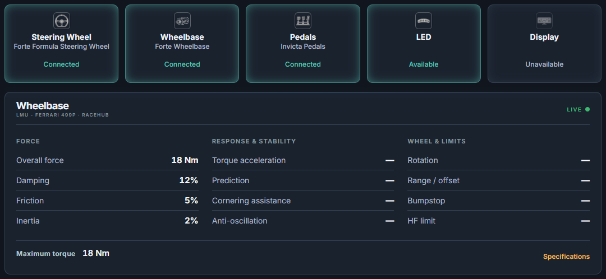

Find it.
Feel it.
Four screens. A short route to your next drive.
Before the first corner.
- 01Open RaceHub
- 02Open RookForce
- 03Load your LMU car
First-time setup
Quick start- Connect your hardware — Turn on your Asetek wheelbase and check that RaceHub can see it.
- Open RaceHub and RookForce — Check the connection indicators and any availability message.
- Load a car in LMU or AC EVO — RookForce needs a supported session to identify your car.
- Check the active profile — Confirm that RookForce shows the existing RaceHub profile you want.
- Choose your feel in LMU — Start with Real, then choose another effort if you prefer.
- Check Game settings — Compare current values with the targets and use Apply LMU settings when available.
01 / PROFILES
Choose your profile.

Match your car to an existing RaceHub profile.
Controls & details
- Single Cars — Use automatic per-car profiles.
- Class — Use one profile per LMU class.
- Single — Use one chosen profile for all LMU cars.
- Save choice — Save the switching mode and its selected profile where required.
- Needs a match — Choose an available profile when RookForce cannot confirm the intended match.
- Manual profile · This session — Your manual LMU choice takes priority for the current session.
Match an existing profile
- Open Match to cars or Manage class mappings — Use the action shown for your selected switching mode.
- Choose the car or class — This car follows the car model across teams; a class match covers that LMU class.
- Choose an existing RaceHub profile — Pick a profile currently available on your wheelbase.
- Press Map or Save class profile — Save the association; saving a mapping does not switch profiles immediately.
- View mappings — Review saved associations; removing one keeps the RaceHub profile.
- Profile editing — Create, import, rename or save wheelbase profiles in RaceHub.
- Need a profile? — Visit the profile library to download an XML or a collection.
02 / DRIVING
Find your steering feel.

Open Driving setup. Compare the current value with your Real target.
Controls & details
- Real — Uses the car's researched reference, adjusted for verified wheelbase capability and active Overall Force.
- Soft, Medium and Hard — Choose a different effort level to suit your preference.
- LMU FFB scale — Fine-tune the selected effort without editing your RaceHub profile.
- Use 100% — Return the scale to the full target for your selected effort.
- Current FFB — Shows the FFB Strength read from LMU settings.
- Your target — Shows the calculated target for your car, wheelbase, Overall Force, effort and scale.
- Matches Real Feel — Means the current FFB matches the car's Real reference.
- Recommendations — Are researched starting points you can adjust to your preference.
- Changing Overall Force — Changes the LMU target needed for your selected feel.
Read the Real Feel Research for the evidence behind the targets.
03 / GAME SETTINGS
See what the game uses.

Open Game settings to review LMU’s force-feedback values.
Controls & details
- FFB Strength — Sets the main steering-force strength in LMU.
- Additional FFB — Controls the game's additional force-feedback effects.
- Engine effects — Controls engine-related feedback.
- Collision strength — Controls collision-related feedback.
- Current / Target — Compare the value read from the game with its recommendation or supported saved choice.
- Green / On target — Means the current value matches its target or accepted range.
- Different from target — Means the value differs; decide whether the recommendation suits you.
- Apply LMU settings — Applies supported targets when the game, car and profile are ready.
- Unavailable — Means the information needed to show or apply that value is missing.
Advanced — LMU game effects
- Automatic — Uses the researched effect target for the current LMU car.
- Fixed — Uses your chosen whole percentage from 0 to 100 across all LMU cars.
- Save overrides — Saves choices for the usual automatic apply or Apply LMU settings when ready.
- Use Automatic for all — Selects Automatic for every effect; press Save overrides to save that choice.
- Steering feel stays separate — These overrides do not change FFB Strength, Steering Effort or LMU FFB scale.
04 / HARDWARE
Know your wheelbase.


Open Hardware. Check the connection and active profile readout.
Controls & details
- Device tiles — Show detected hardware and its reported connection or operating state.
- Overall force — Shows the active wheelbase profile's force setting in Nm.
- Damping, friction and inertia — Show the active profile's wheelbase effects.
- Torque acceleration — Shows the profile's limit on how quickly torque can change.
- Prediction, cornering assistance and anti-oscillation — Show the active profile's response settings.
- Rotation, range, bumpstop and HF limit — Show the profile's movement and limit settings.
- Maximum torque / Specifications — Show verified wheelbase capability and further information when available.
- Change settings in RaceHub — RookForce updates its readout after RaceHub's changes settle.
- Loading indicator — Means RookForce is waiting for a stable update before showing refreshed values.
Need a hand?
Something looks wrong
- Wrong profile — Check your switching mode, saved mapping and any manual session choice.
- No profile switch — Check wheelbase connection, RaceHub status and profile availability.
- No car shown — Load into a supported game session.
- Waiting or loading — Let RaceHub finish its change and RookForce complete the update.
- Wheelbase reconnected — Refresh the profiles before relying on its newly connected values.
- LMU paused — The last valid presentation can remain visible without being a new reading.
- Disabled action — Read its status message to see what is still needed.
- Need support — Use Settings → Export RookForce logs, then share the export with support.
Settings, updates & controls
- Appearance — Choose light or dark in Settings.
- Start quietly with Windows — Keep RookForce available from the notification area after sign-in.
- Move aside while driving — Hide to the notification area while a supported game runs, then restore after it closes.
- Steering Effort controls — Choose a controller, press Bind and then press your chosen Lighter or Heavier button.
- Check for updates — Check the public release, then download and install your chosen update.
Using AC EVO
- Load a car — RookForce uses AC EVO's own car information and settings.
- Static Real Feel wheel preset — Set it manually once using the AC EVO guidance.
- Car FFB Multiplier — Provides the supported saved force-feedback adjustment for each car.
- Close AC EVO — RookForce backs up and synchronizes supported saved multipliers only while the game is closed.
- Start AC EVO again — Saved multiplier changes take effect on the next launch.
- Car FFB details — Shows synchronization status and available recovery controls.